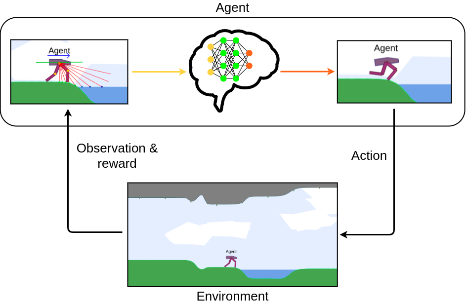

List of running agents
To begin you can select one of the following environments to load it into the simulation.
In this section you can store your own custom environments by saving them thanks to the button above or by uploading them from a JSON file.
Terrain Generation
Here you can draw your own parkour!
Select the Ground or Ceiling button to start drawing the corresponding terrain shape with the mouse.
Be careful not to draw more than one line at different heights if you want the result to be optimal.
You can use the Erase button if you need to correct your drawing or the Clear one to clear all your drawing.
When you are satisfied with the result, just click the Generate Terrain button.
You can also use these three sliders to generate the terrain shapes automatically.
General parameters
Creepers
Rendering Options
Assets
Here you can find several types of assets, which are objects that you can add to the simulation using the mouse.
Purpose of the demo
The goal of this demo is to showcase the challenge of generalization to unknown tasks for Deep Reinforcement Learning (DRL) agents.
DRL is a machine learning approach for teaching virtual agents how to solve tasks by combining Reinforcement Learning and Deep Learning methods. This approach has been used for a diverse set of applications including robotics (e.g. Solving Rubik's Cube), video games and boardgames (e.g. AlphaGo).
In this demo, all the agents have been autonomously trained to learn an efficient behaviour to navigate through a 2D environment, combining different methods so that they can be able to generalize their behaviour to never-seen-before situations.
The demo provides different tools to customize the environment in order to test and challenge the robustness of the agents on different situations.
Reinforcement Learning
Reinforcement Learning (RL) is the study of agents and how they learn by trial and error.
The main idea is to reward or punish an agent according to the actions it takes in order to teach it an efficient behavior to reach an objective.
The RL approaches generally feature an agent which evolves and interacts with a world.
At each interaction step, the agent sees a partial observation of the current state of the environment and decides of an action to take.
Each action taken by the agent changes the state of the world.
The agent also receives a reward signal at each step, that indicates how good or bad the current state is
according to the objective the agent has to reach.
The diagram on the right presents this interaction process between the agent and the environment,
with the different information they exchange at each step.
Maximizing the reward over steps is a way for the agent to learn a behaviour, also called policy,
to achieve its objective.

Deep RL
In order to remember and improve the actions taken by the agent, DRL algorithms utilizes artificial neural networks. With training, these neural networks are able to learn to predict an optimal action to take at each step from the observation received, and relying on all the observations and rewards previously received after each action during training. Thanks to this, DRL algorithms are able to produce behaviours that are very effective in situations similar to those they were trained on.

However, in real-world applications, the environment rarely remains still and frequently evolves. Therefore one would want DRL agents to be able to generalize their behaviour to previously unseen changes of the environment so that they can adapt to a large range of situations.
Automatic Curriculum Learning
One solution to handle this challenge is to train DRL agents on procedurally generated environments.
Procedural generation is a method of automatically creating environments according to some parameters.
Using this method, DRL agents can be trained on a very wide range of environments, hence allowing them
to generalize their behaviour to more different situations.
However, randomly generating environments during training implies the risk to generate environments that are too difficult or too easy to resolve
for the agents, preventing them to continuously learn in an efficient way.
Therefore, one would need smarter training strategies that propose relevant environments tailored to the current learning progress of the student (DRL agent).
This method is called Automatic Curriculum Learning (ACL) and is embodied by a teacher algorithm which is trained to learn to generate
the most relevant environments throughout the entire training process according to the student performances.
This way, the teacher proposes easy environments to the student at the beginning and gradually increases the difficulty
and the diversity of the tasks in order to guarantee that the student is progressing while not always facing the same situation or forgetting what it has already learned.
About the demo
In this demo, all the available agents were trained using Soft Actor Critic
as the DRL student algorithm alongside different ACL teacher algorithms such as ALP-GMM.
They successfully learned efficient behaviours to move through the environment and to generalize to never-seen-before situations.
The physics of the simulation are supported by box2d.js
which is a direct port of the Box2D physics engine to JavaScript.
The pre-trained policies (agents behaviours) are loaded in the browser thanks to TensorFlow.js.
Credits
This demo was designed by Paul Germon as part of an internship within Flowers research team at Inria. This internship was monitored by Rémy Portelas and Clément Romac, and supervised by Pierre-Yves Oudeyer. Special thanks to Nikita Melkozerov for its very helpful contribution.
- The code of this demo is open-source and can be found on this github repository.
- The code of the environment and agents is adapted from the TeachMyAgent benchmark's Python code to JavaScript.
References
- [1] OpenAI, Ilge Akkaya, Marcin Andrychowicz, Maciek Chociej, Mateusz Litwin, Bob McGrew, Arthur Petron, Alex Paino, Matthias Plappert, Glenn Powell, Raphael Ribas, Jonas Schneider, Nikolas Tezak, Jerry Tworek, Peter Welinder, Lilian Weng, Qiming Yuan, Wojciech Zaremba, Lei Zhang: Solving Rubik's Cube with a Robot Hand (2019). https://arxiv.org/abs/1910.07113
- [2] Silver, D., Huang, A., Maddison, C. et al. Mastering the game of Go with deep neural networks and tree search. Nature 529, 484–489 (2016). https://doi.org/10.1038/nature16961
- [3] Portelas, R., Colas, C., Weng, L., Hofmann, K., & Oudeyer, P. Y. (2020). Automatic curriculum learning for deep rl: A short survey (2020). https://arxiv.org/abs/2003.04664
- [4] Haarnoja, T., Zhou, A., Abbeel, P., & Levine, S. (2018, July). Soft actor-critic: Off-policy maximum entropy deep reinforcement learning with a stochastic actor. In International conference on machine learning (pp. 1861-1870). PMLR https://arxiv.org/abs/1801.01290
- [5] Portelas, R., Colas, C., Hofmann, K., & Oudeyer, P. Y. (2020, May). Teacher algorithms for curriculum learning of deep rl in continuously parameterized environments. In Conference on Robot Learning (pp. 835-853). PMLR. https://arxiv.org/abs/1910.07224
- [6] Romac, C., Portelas, R., Hofmann, K., & Oudeyer, P. Y. (2021). TeachMyAgent: a Benchmark for Automatic Curriculum Learning in Deep RL. https://arxiv.org/abs/2103.09815
Add an agent
Here you can add an agent to the simulation with the morphology of your choice.